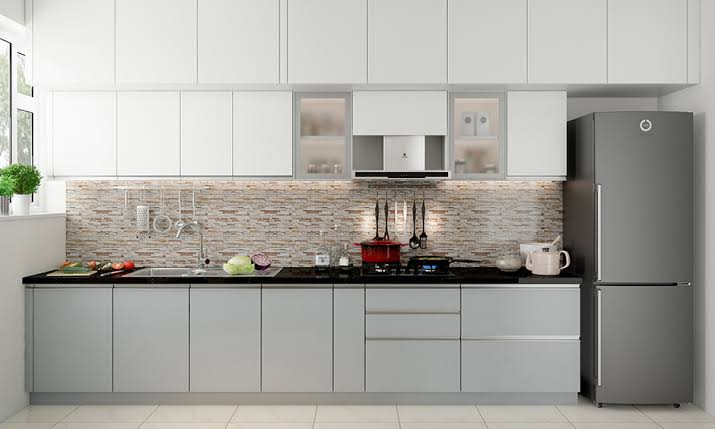
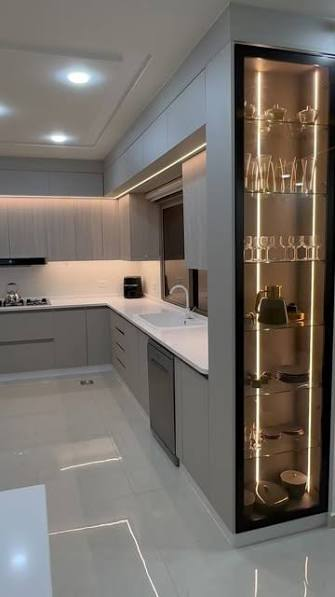
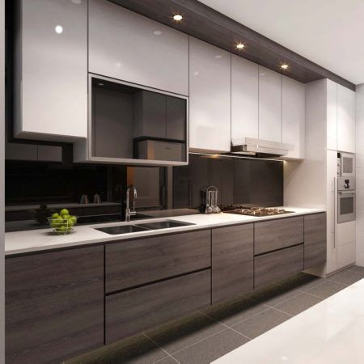
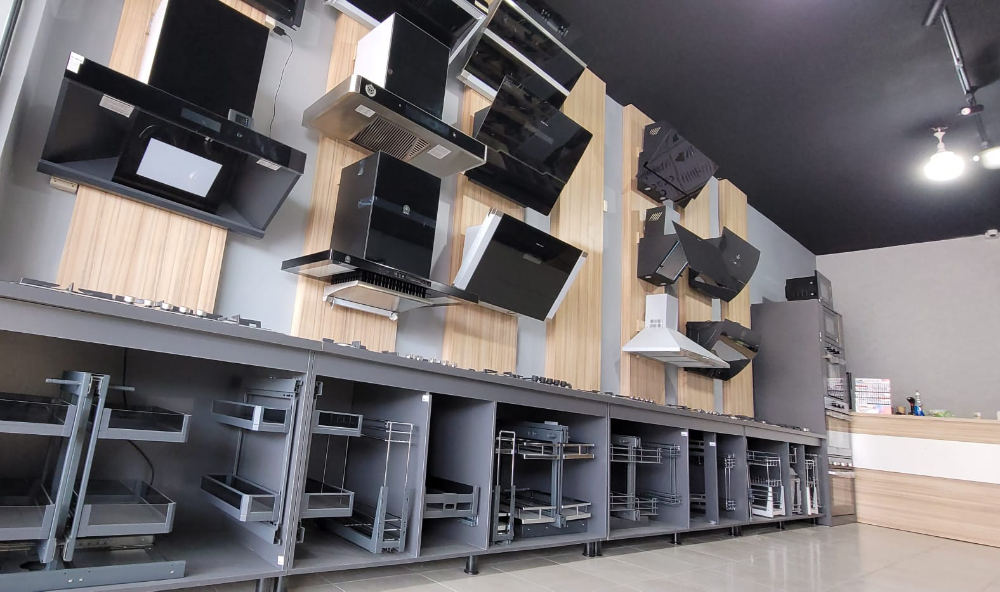
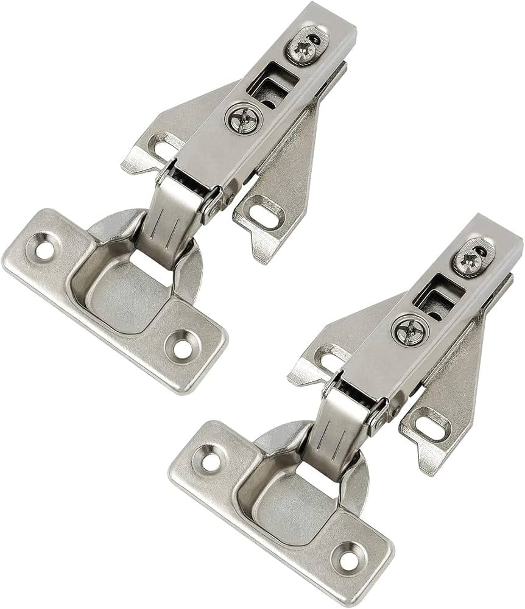
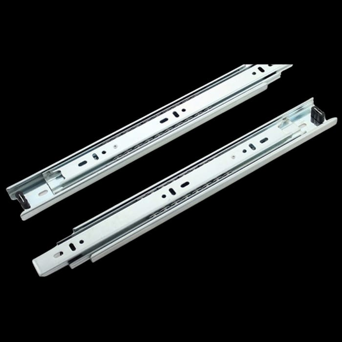

01
صيانة مطابخ ألمنيوم
فحص وإصلاح مشاكل مطابخ الألمنيوم ومعالجة الأعطال والمشاكل الناتجة عن الاستخدام اليومي.
اطلب الخدمة ←أبو خالد لصيانة وإصلاح المطابخ
نقدم خدمات صيانة وتصليح مطابخ الألمنيوم باهتمام بالتفاصيل وجودة في التنفيذ. إصلاح الأبواب والأدراج والمفصلات والإكسسوارات ومشاكل المطابخ المختلفة في الرياض.

خدمات متخصصة لصيانة وإصلاح مطابخ الألمنيوم، مع الاهتمام بالتفاصيل الصغيرة التي تحافظ على شكل المطبخ وكفاءته.
فحص وإصلاح مشاكل مطابخ الألمنيوم ومعالجة الأعطال والمشاكل الناتجة عن الاستخدام اليومي.
اطلب الخدمة ←إصلاح أبواب خزائن المطابخ وضبط الحركة ومعالجة مشاكل الفتح والإغلاق وعدم استقامة الأبواب.
اطلب الخدمة ←صيانة وتغيير وضبط مفصلات أبواب خزائن المطبخ وتحسين حركة الأبواب وإغلاقها بشكل سليم.
اطلب الخدمة ←إصلاح أدراج المطابخ ومعالجة مشاكل السحب والحركة وعدم الإغلاق وتركيب القطع المناسبة.
اطلب الخدمة ←صيانة واستبدال المقابض والإكسسوارات والقطع المستخدمة في مطابخ الألمنيوم حسب الحاجة.
اطلب الخدمة ←معالجة المشاكل الموجودة في المطابخ القديمة وإعادة ترتيب وضبط الأجزاء لتحسين الاستخدام.
اطلب الخدمة ←

في صيانة وتصليح مطابخ ألمنيوم أبو خالد، نركز على تقديم حلول عملية لمشاكل المطابخ مع الاهتمام بجودة الإصلاح وشكل المطبخ بعد الانتهاء من العمل.
سواء كانت المشكلة في باب لا يغلق بشكل صحيح، درج لا يتحرك بسهولة، مفصلة تحتاج إلى ضبط، مقبض يحتاج إلى تغيير، أو أي مشكلة أخرى في مطبخ الألمنيوم، نوفر خدمة صيانة وإصلاح مناسبة حسب حالة المطبخ.
فحص المشكلة وتحديد سببها
حلول مناسبة لمختلف مطابخ الألمنيوم
اهتمام بالتفاصيل ونظافة مكان العمل
خدمة داخل مدينة الرياض
لأن جودة المطبخ لا تعتمد على شكله فقط، بل على سلامة الأبواب والأدراج والمفصلات وجميع التفاصيل المستخدمة يوميًا.







هدفنا أن تحصل على خدمة صيانة واضحة ومرتبة تساعدك على إعادة مطبخك إلى أفضل حالة ممكنة.
الاهتمام بالمشكلة الأساسية وعدم الاكتفاء بالحلول المؤقتة عندما تكون هناك حاجة إلى إصلاح فعلي.
خدمات متخصصة في مطابخ الألمنيوم وأجزائها المختلفة من أبواب وأدراج ومفصلات وإكسسوارات.
نقدم خدمات صيانة وتصليح مطابخ الألمنيوم للعملاء داخل الرياض حسب الموقع واحتياج الخدمة.
نحرص على أن يكون الإصلاح مرتبًا وأن تعود أجزاء المطبخ إلى الاستخدام بشكل أفضل.
إذا كنت تبحث عن فني صيانة مطابخ ألمنيوم في الرياض، يقدم أبو خالد خدمات صيانة وتصليح المطابخ بمختلف أنواع المشاكل التي قد تظهر مع الاستخدام اليومي.
تشمل خدماتنا تصليح أبواب مطابخ الألمنيوم، ضبط المفصلات، إصلاح الأدراج، تغيير مقابض وإكسسوارات المطابخ، معالجة مشاكل الفتح والإغلاق، صيانة أجزاء المطبخ وإعادة ضبط القطع التي تحتاج إلى إصلاح.
نهتم بتقديم خدمة مناسبة لحالة كل مطبخ، سواء كان المطبخ حديثًا أو قديمًا، مع التركيز على المحافظة على شكل المطبخ وتحسين سهولة استخدامه.
اتصل الآن واستفسر عن خدمة صيانة أو تصليح مطبخك.
للاستفسار عن صيانة أو تصليح مطبخ ألمنيوم داخل الرياض، تواصل معنا مباشرة عبر الهاتف أو الواتساب.